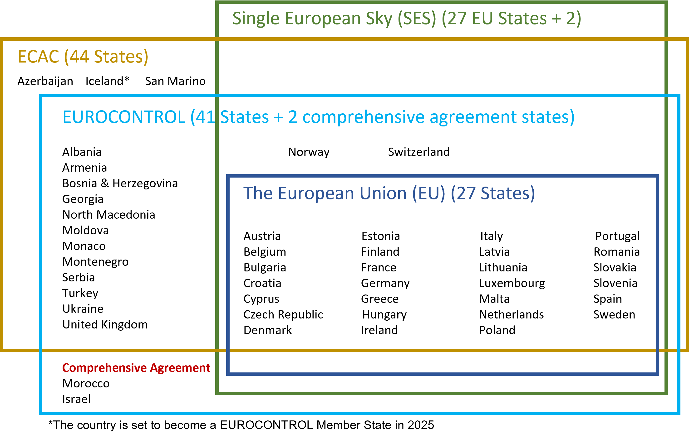
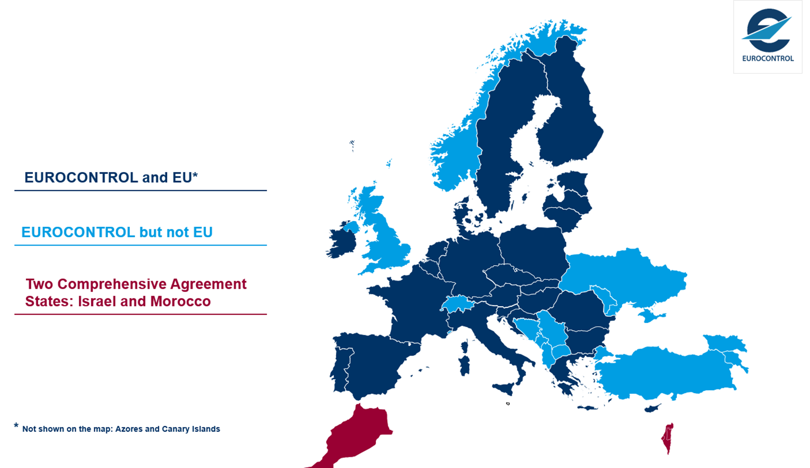
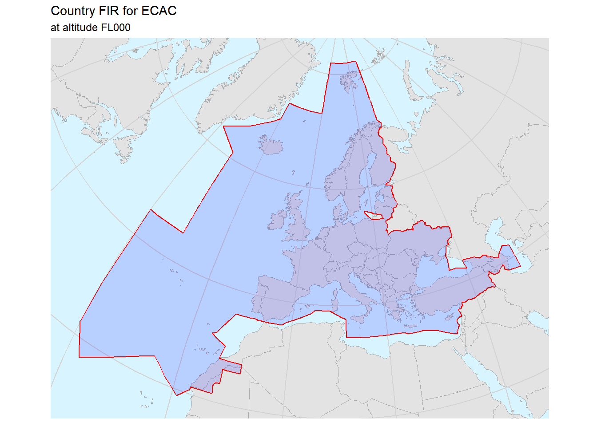

Geographical Areas
Member States and geographical areas covered
EUROCONTROL Member States (status: November 2020)

Airspace of the ECAC Member States

Comment
ECAC is an intergovernmental organisation which was established by ICAO and the Council of Europe. ECAC now has 44 Member States, including all 27 EU Member States, 31 of the 32 European Aviation Safety Agency Member States, and all 41 EUROCONTROL Member States. Further information on traffic region definitions is available in the EUROCONTROL STATFOR 7-year IFR Flight Movements and Service Units Forecast, Annex 1. https://ansperformance.eu/traffic/statfor/